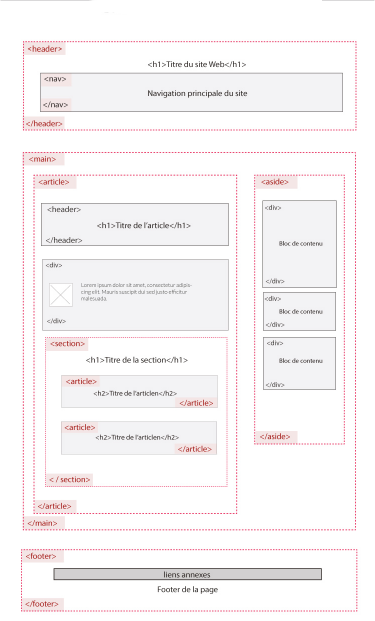

MMI - DUT 1ère année CSS Avancé - Travaux Pratiques Intervenant - Vincent SEGUIER
Objectifs du TP : Préparer la trame de votre cv.
Aide pour ce TP : w3schools et tutowebdesign ou autre site, Google, votre cours.
A partir de votre C.V. élaboré pour votre recherche de stage et en vous appuyant sur un logiciel tel que :
Voici un exemple :
Il faut que vous ayez mis en place la partie Html pour les 2 derniers TP.